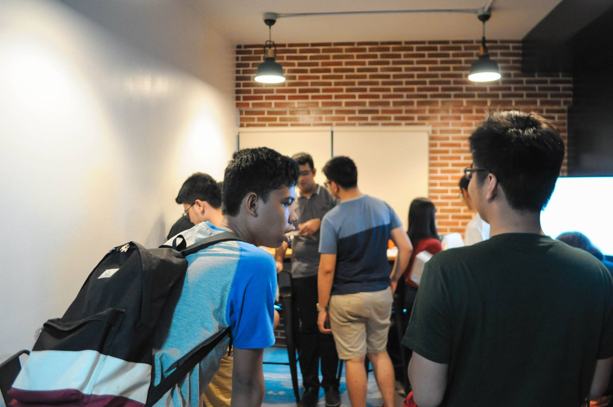
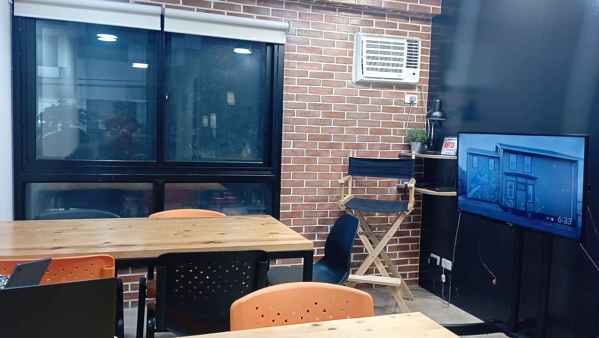

Something needs to change
Someone encounters a problem, challenge, or opportunity.
Innovation • People • Stories
Behind every app, platform, or breakthrough is a story about a problem, an idea, and the people trying to make something new happen.

The big idea
Innovation develops through conversations, decisions, experiments, challenges, relationships, and opportunities.
We often think of innovation as an app, device, platform, or new technology. But products do not simply appear.
An idea changes as people test it, question it, build it, use it, and respond to the problems they encounter along the way.
In other words, innovation has a story.
The journey
Innovation rarely follows a straight line. It develops through action, feedback, and change.
Someone encounters a problem, challenge, or opportunity.
Someone asks, “What if there is a better way?”
Founders, builders, mentors, partners, investors, and users become involved.
Resources, technology, regulations, competition, and uncertainty create new challenges.
Ideas are revised, products improve, and new people become part of the story.
Innovation does not move in a straight line. It evolves.
The people
Different people—and the systems around them— can influence what an innovation eventually becomes.
Spots a problem and imagines something different.
Helps transform ideas into products, services, or technology.
Provides knowledge, resources, support, or connections.
Influences innovation through feedback, experience, and use.
Represents obstacles and challenges that must be addressed.
Includes technology, infrastructure, regulations, and other forces.
Interactive Simulation
Every innovation meets friction. Choose an everyday challenge, select who leads the effort, and introduce a systemic barrier to see how the story evolves.
Startups do not follow straight lines. Here is how systemic pushback changes the original concept:
Initial digital-first rollout designed to bypass manual checkpoints.
Bandwidth drops in transit corridors, breaking cloud-based verification.
Pivoted to hybrid SMS tokens anchored in local Barangay centers.

The Philippine startup story
Philippine startups are shaped by local experiences, communities, technologies, infrastructure, opportunities, and challenges.
Sometimes an innovation begins with something surprisingly ordinary: a problem someone experiences in everyday life.
That experience can become an idea—and that idea can grow through technology, partnerships, users, and the people who help bring it to life.
Why it matters
Stories reveal the relationships and interactions that are often hidden behind successful innovations.
Conversations and feedback can transform what people originally imagined.
Real users reveal problems, opportunities, and possibilities.
New technologies, people, and challenges can reshape entire organizations.
Your role
You do not have to be a startup founder to influence innovation.
Every innovation starts somewhere—with a problem, a question, an experience, or an idea that something could be different.
Consult with us